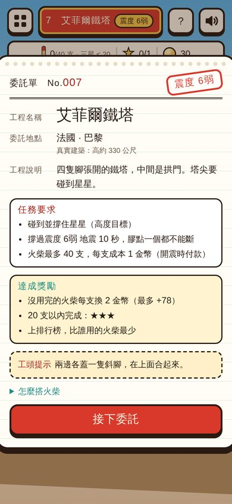
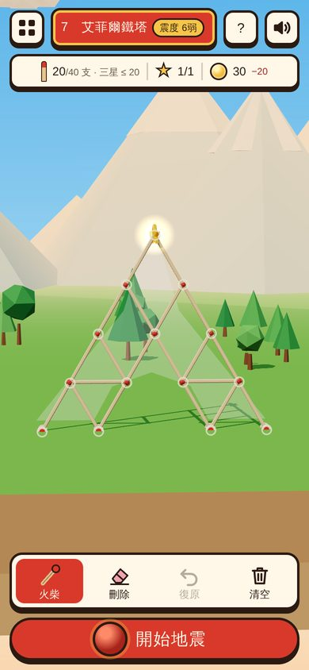
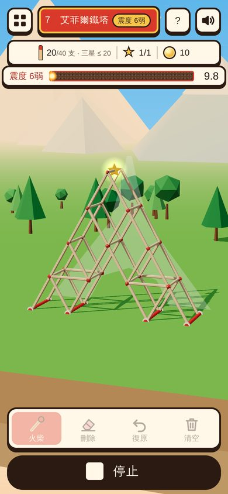
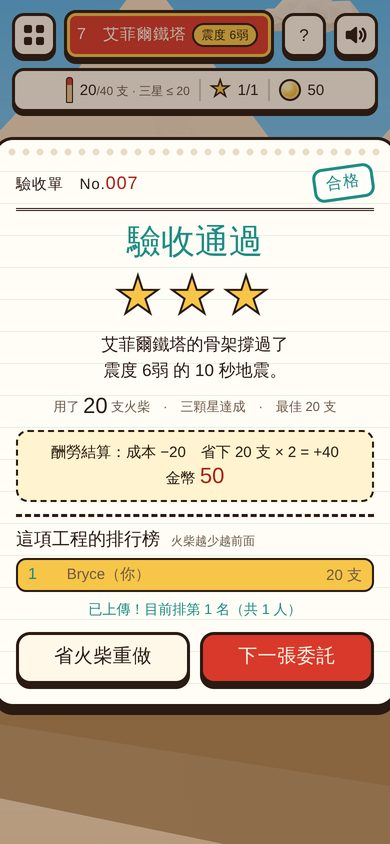
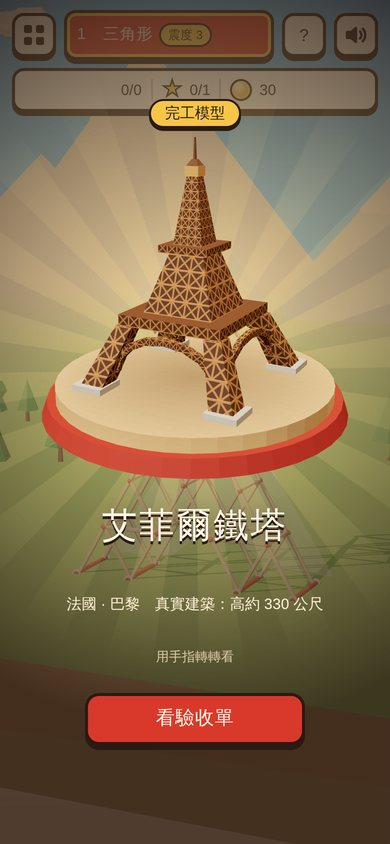
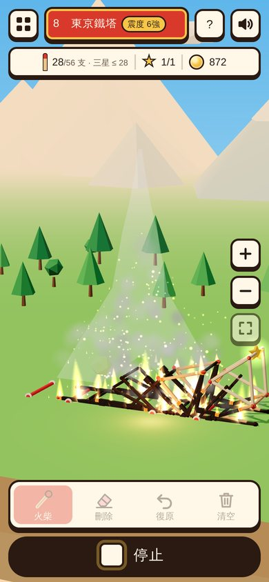
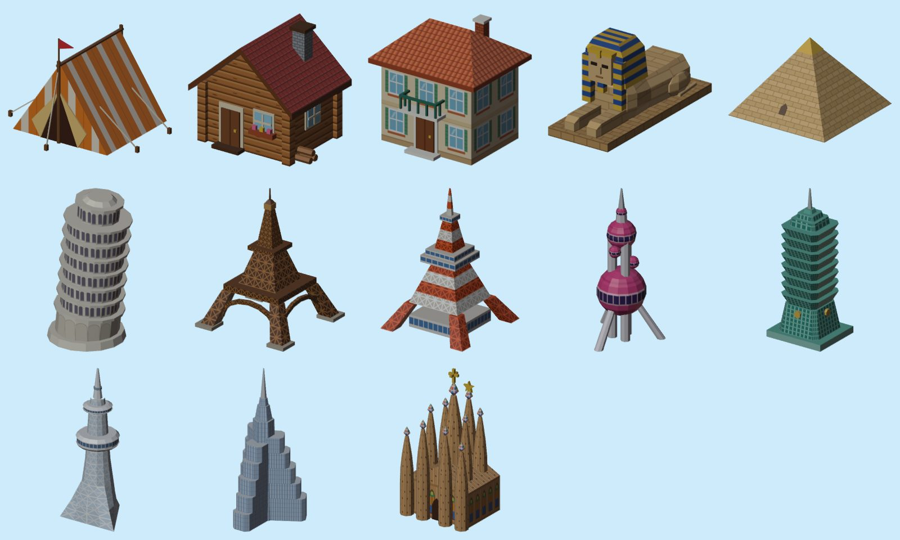
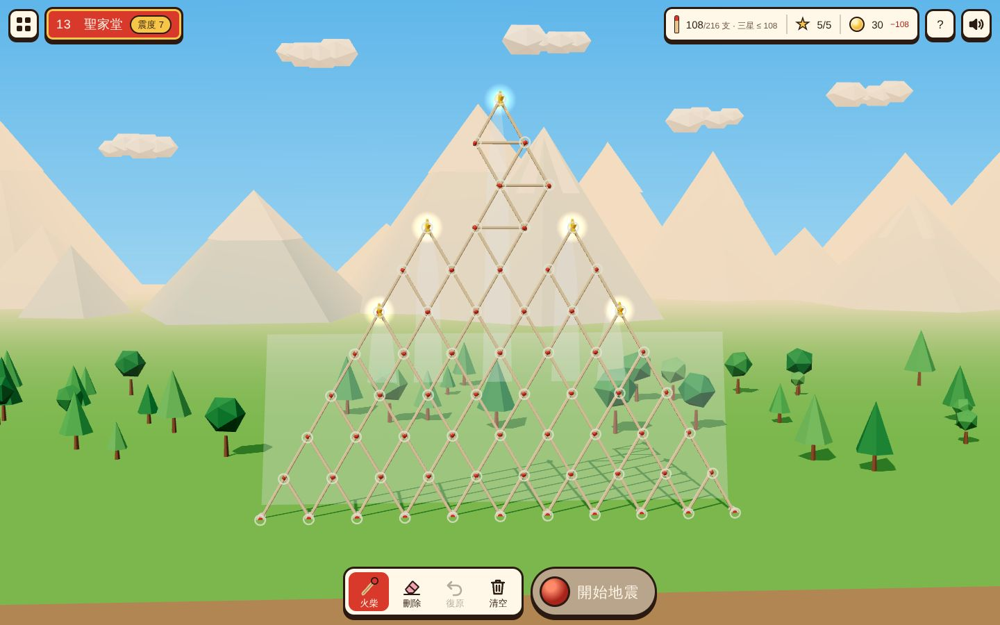

HOW TO PLAY
接單、搭骨架、等驗收
你是一位火柴建築師。建造時沒有重力，想怎麼搭就怎麼搭；按下「開始地震」的那一刻，物理才開始算。
-

1接下委託單
每關是一張委託單：要蓋什麼、要撐過幾級震度、最多能用幾支火柴，還有過關能拿到的酬勞。
-

2拖出火柴搭骨架
從紅色錨點或火柴端點拖出一支火柴，端點會自動接上。在火柴中段按住，還能黏上斜撐。碰到所有星星才能開震。
-

3撐過 10 秒地震
開震時付火柴錢。地面左右搖晃 10 秒，建築展開成立體的塔。受力越大的火柴越紅；膠點一斷就起火，火沿著火柴燒過去，整棟垮成一堆黑炭。
-

4驗收、領酬勞
合格時先看這棟建築的 Q 版模型在轉台上旋轉。沒用完的火柴每支換 2 金幣，用得越少星星越多，還能上榜比誰最省。
COINS
火柴要錢，省下來的加倍還你
不規定一定要用幾支。只要蓋出委託的形狀、撐過 10 秒就過關；用得越少，分數和酬勞越高。
配額每張委託單給三星目標 2 倍的火柴。蓋超過配額就不能開震。
成本每支火柴 1 金幣，按下「開始地震」時付款。錢不夠就不能再放火柴。
酬勞驗收合格後，配額裡沒用完的火柴每支換 2 金幣。金幣會一直累積，也有金幣總榜。
例子：艾菲爾鐵塔
配額 40 支，用了 20 支
成本 −20
省下 20 支 × 2 = +40
淨賺 20 金幣，還拿到三星一開始有 30 金幣。沒撐過地震的話，那次的火柴錢就燒掉了；金幣低於 10 時，工作室會補到 10，不會卡關。
PASS OR BURN
合格送你完工模型，倒了就燒成一堆炭
過關時，這棟建築的 Q 版模型會在木頭轉台上旋轉，可以用手指轉。失敗時，膠點一斷就起火，火沿著火柴燒過去，燒到的膠點融掉，整棟垮下來。



SHINDO
震度從 3 一路到 7
每關都有指定震度。越後面的建築越高、越寬，地震也越大；太細、太窄的塔會在高樓層被震斷。
3教學
4小屋
5弱小鎮
5強城市
6弱鐵塔
6強高塔
7最終關
遊戲裡的震度是難度分級，借用台灣的震度名稱，不代表真實的地表加速度。
LEVELS
從三角形蓋到聖家堂
網頁版可以玩 10 關；完整版會擴充到 100 關。
世界名建築
可以玩小鎮生活・城市街角
製作中工程挑戰・名建築前篇
製作中FINAL LEVEL
最終關：五座尖塔的聖家堂
寬 10 支火柴的地基、五顆星星，要撐過震度 7。三星目標是 108 支，你能用得更少嗎？

MADE WITH AI
怎麼做出來的
AI Browser Game Jam 5 參賽作品，程式、關卡、美術與音效大部分由 AI 協作完成。
Planck.js2D 物理：火柴是剛體，膠點是有摩擦的鉸接，受力超過門檻就斷。
Three.js即時 3D 低多邊形畫面，地震時建築展開成立體塔。
Blender火柴、13 個 Q 版建築模型（含仿原建築的貼圖）與封面，都用 Python 腳本產生。
Web Audio火柴斷裂、地鳴、木琴配樂全部即時合成，沒有音檔。
In English: Match Architect is a free browser game where you take building commissions from around the world and frame them out of fixed-length matchsticks. Each level is a work order with a quake intensity and a match quota. Build with no gravity, then start the quake: the ground shakes for 10 seconds, and any glue joint that takes too much force snaps. Every match costs a coin; reach every star and survive, and each unused match in the quota pays back two coins. If a joint snaps, fire runs through the matches and the building comes down; pass, and a cute 3D model of the real landmark spins on a turntable. The game is in English and Traditional Chinese.